Power-ups
Current pickups (shipped models re-staged at dusk) next to the reference images, plus concepts for the three new v2 items that have no image. Prices, caps and unlocks per vision doc (Kehinde, Oct 16); game-side changes in G-Prototype PR #51.
reference/*/README.md.Current pickups

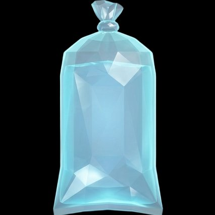

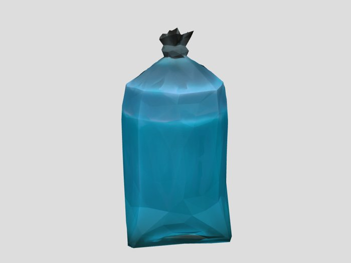

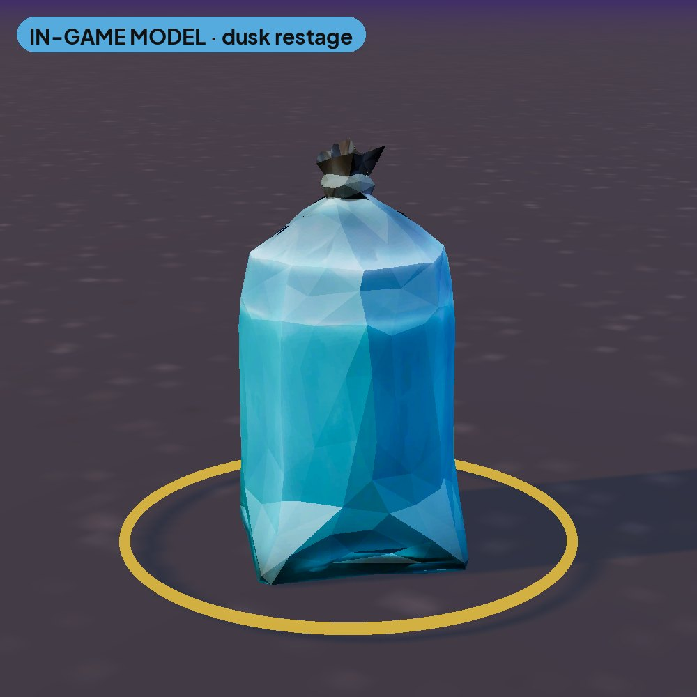
Pure Water
Site values (vision doc): 60 chips · cap 2 · from L3
Vision v2 §8: One-hit shield: forgives the next traffic hit on you or a follower. until hit / 8 s · cap 2 · cost 60 · L3
v2 concept (not hosted, origin unclear): a pillow-shaped sachet with blue water, on white.

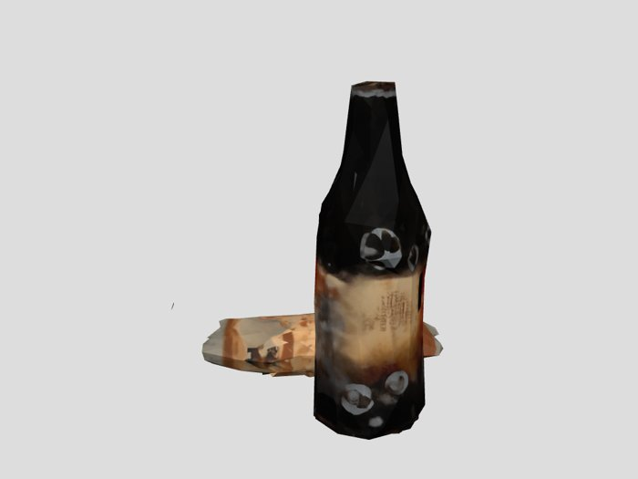

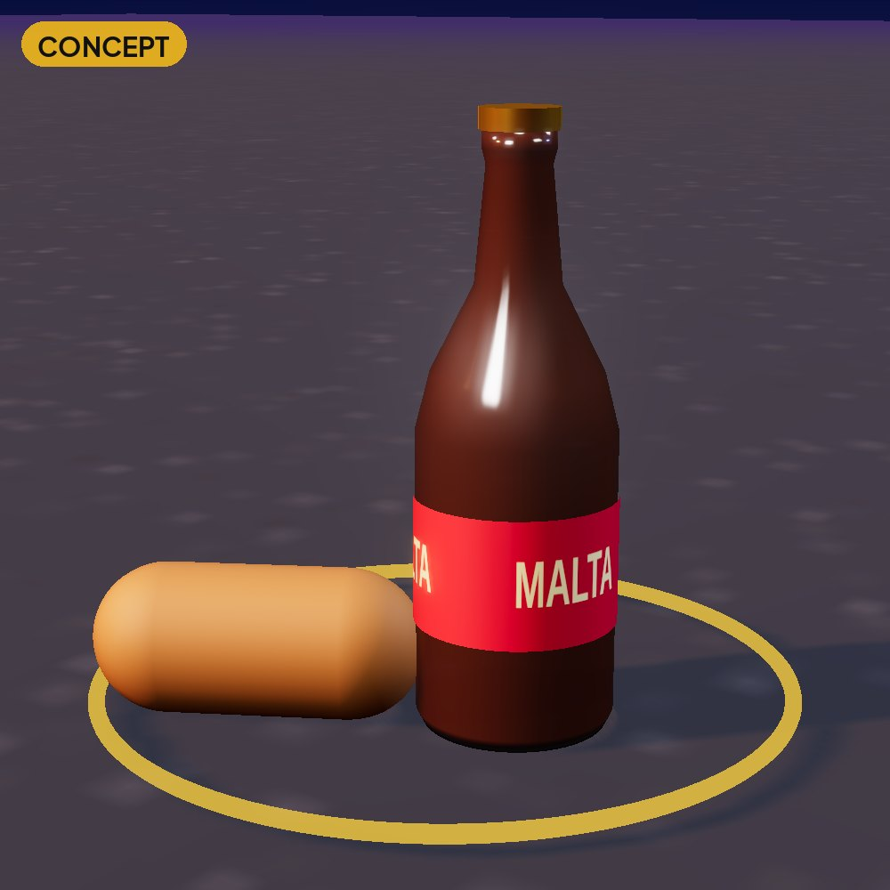
Malta & Agege Roll
Site values (vision doc): 80 chips · cap 2 · from L3
Vision v2 §8: All traffic eases to 50% speed. Spawns paused. 4 s · cap 2 · cost 80 · L3
Renamed by Kehinde (Oct 16): display name is now Malta & Agege Roll (fictional, no real brands). The internal id maltina_gala is unchanged. The old in-game pickup image is not hosted because its packaging shows a real brand; the render here is a CONCEPT for the renamed pickup: an amber malt bottle with a generic “MALTA” label and a golden Agege roll. The shipped model still needs re-texturing in the game.

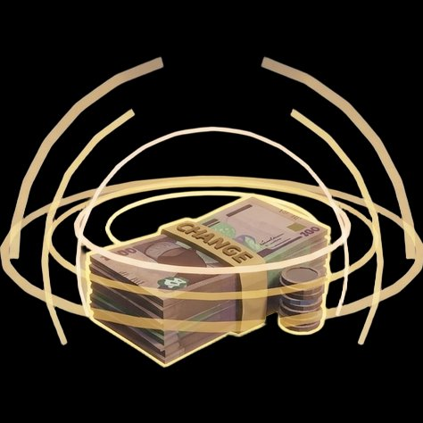

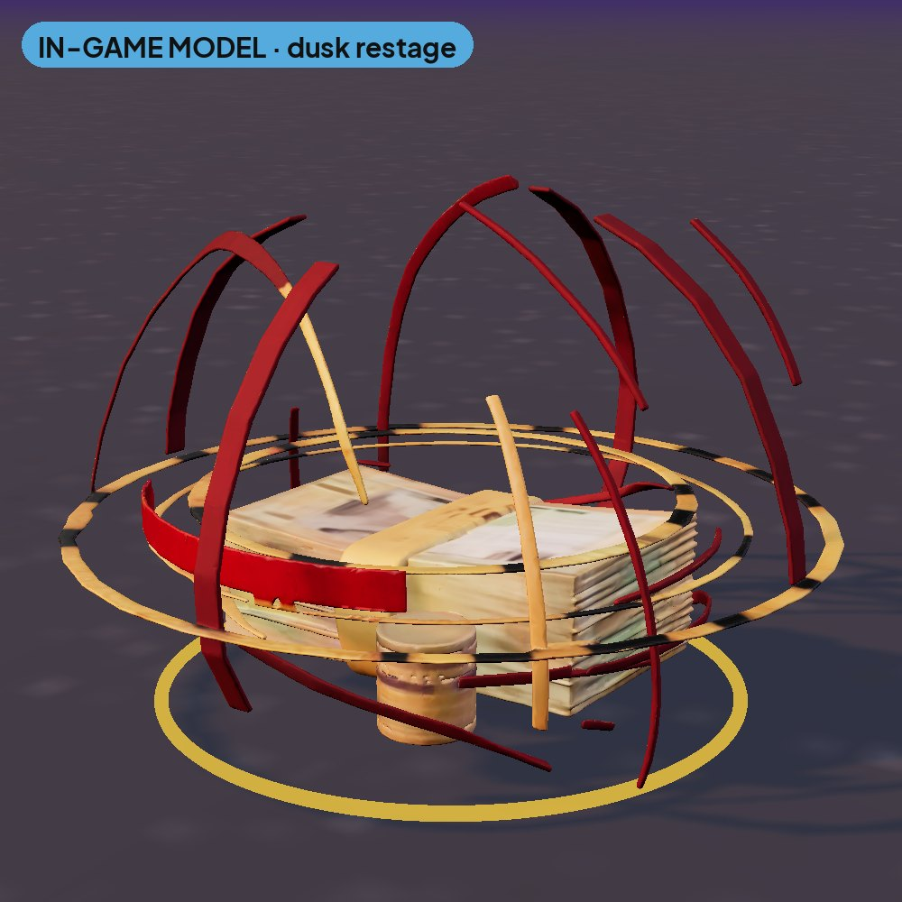
Change (Bribe)
Site values (vision doc): 90 chips · cap 2 · from L5
Vision v2 §8: Spent automatically on LASTMA/KAI contact. Faction zone safe. 6 s · cap 2 · cost 90 · L5
v2 concept (not hosted, origin unclear): a rubber-banded stack of worn naira-style notes and a coin.

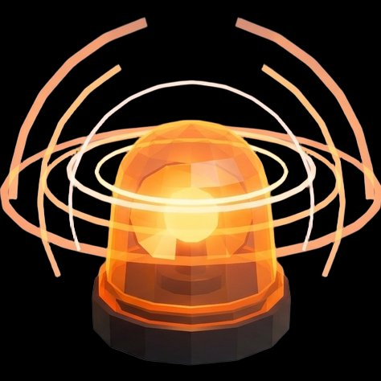

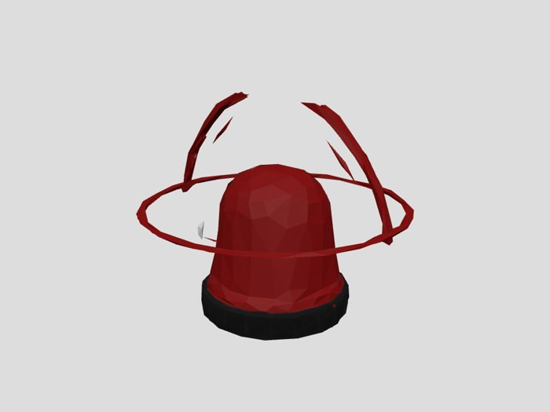

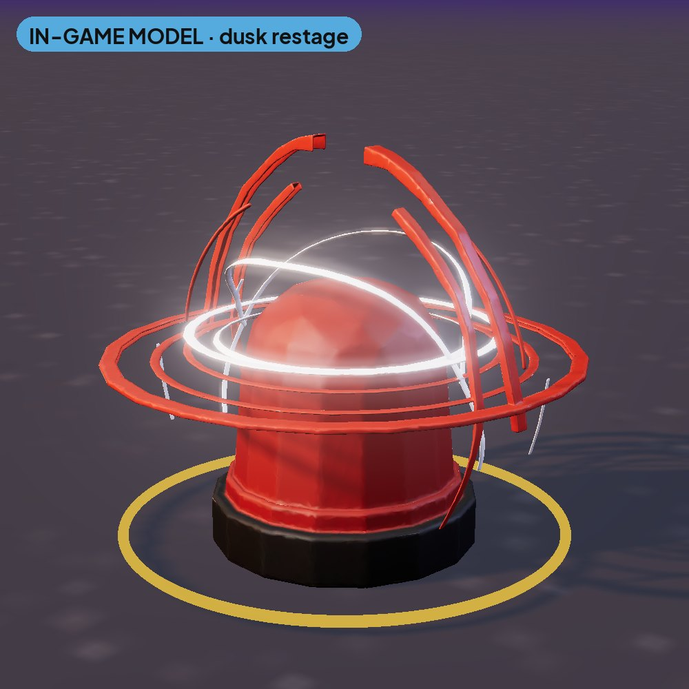
VIP Siren
Site values (vision doc): 120 chips · cap 1 · from L5
Vision v2 §8: Freezes every lane except the one you face. LASTMA ignores you. 4 s · cap 1 · cost 120 · L5
v2 concept (not hosted, origin unclear): a red/blue LED light bar.
New v2 items CONCEPT
Vision: “You read the traffic, shout ‘Owa!’, and everybody gets across safe.”

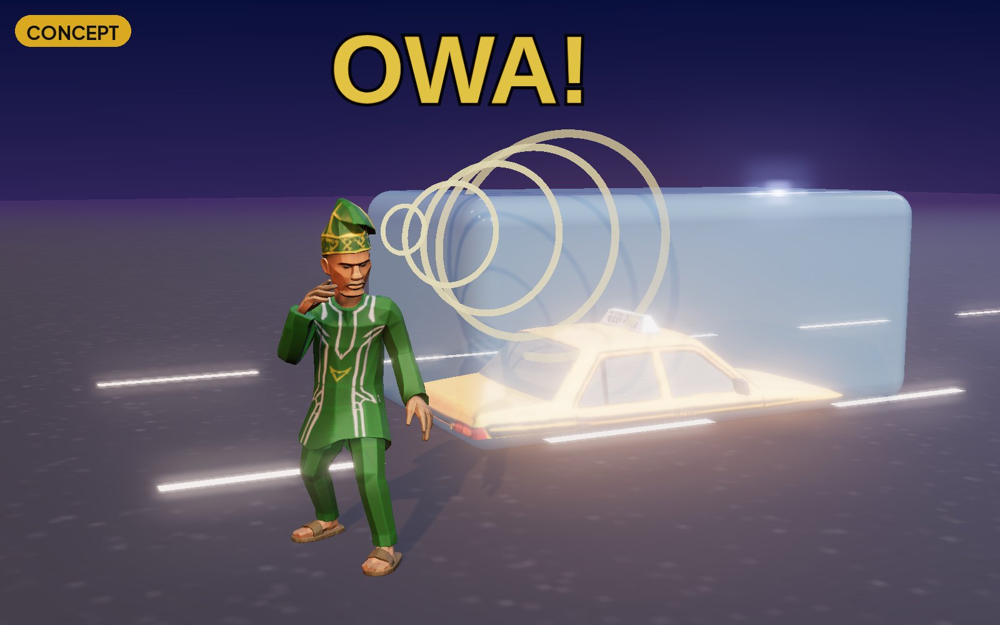
Owa! (shout)
Baba Gidi cups his mouth; gold sound rings travel along his facing direction and the next lane's vehicle freezes in a pale-blue ice block (colour-blind safe: shape plus colour). FREE per the vision (starts every run full, refills between districts) · cap 3 · from L2. Shop refill: 80 chips per charge.
Vision v2 §8: Freezes vehicles in the next lane in your facing direction, within 14 m. 3 s · cap 3 · cost free · L2
Use the shipped danfo (see Vehicles).

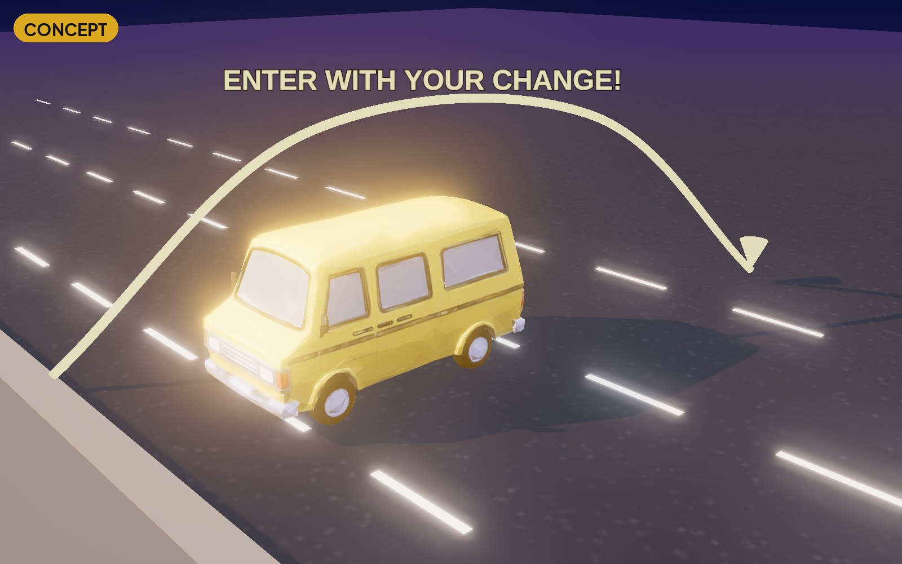
Danfo Ride
A gold-lit danfo at the curb; a gold arc shows the 2-lane hop. Toast copy: “ENTER WITH YOUR CHANGE!” Price: 150 chips, shop only, cap 1, unlock L4 (vision v2 §8: “Cost (chips) 150 · How earned: Shop only”). Not in the game code yet.
Vision v2 §8: A danfo carries you + your group across the next 2 lanes; invulnerable while riding. ~2 s · cap 1 · cost 150 · L4
Detty December flex. Earned only.

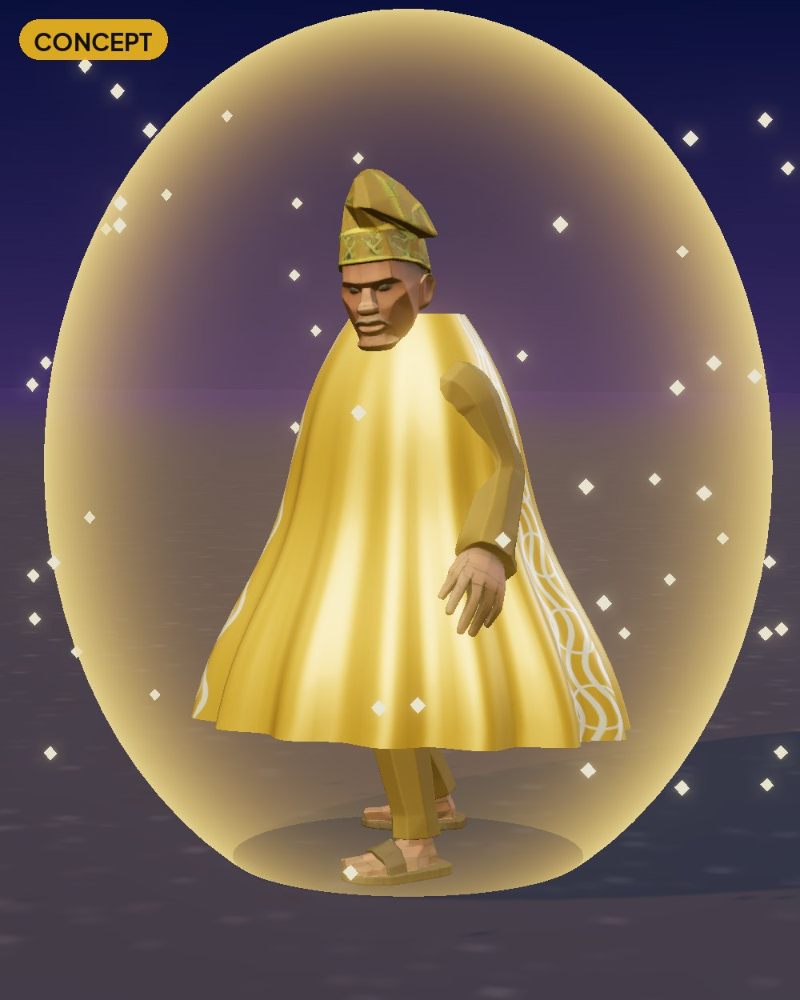
Agbada Armour
Baba Gidi in a gold agbada inside a gold fresnel shell with sparkles. 2.5 s of full immunity; followers stay vulnerable. No price: vision v2 §8 lists the cost as “—” and says “Earned only: fill the Owa meter via near-miss chains / x5 combo. Never sold”. Not in the game code yet.
Vision v2 §8: Full traffic immunity. Followers are not covered. 2.5 s · cap 1 · cost earned only · L6
Not shown as images
- Okada Dash (v2, L7, not sold): concept image exists but isn't hosted (origin unclear). Description: yellow open-face helmet with a black stripe.
- Gist Bomb (v2, 100, L8): concept image exists but isn't hosted (origin unclear). Description: a red retro transistor radio.
- Agbero Whistle: still in the code (120 chips, cap 2, L7) but removed in vision v2, so the site keeps the code values.

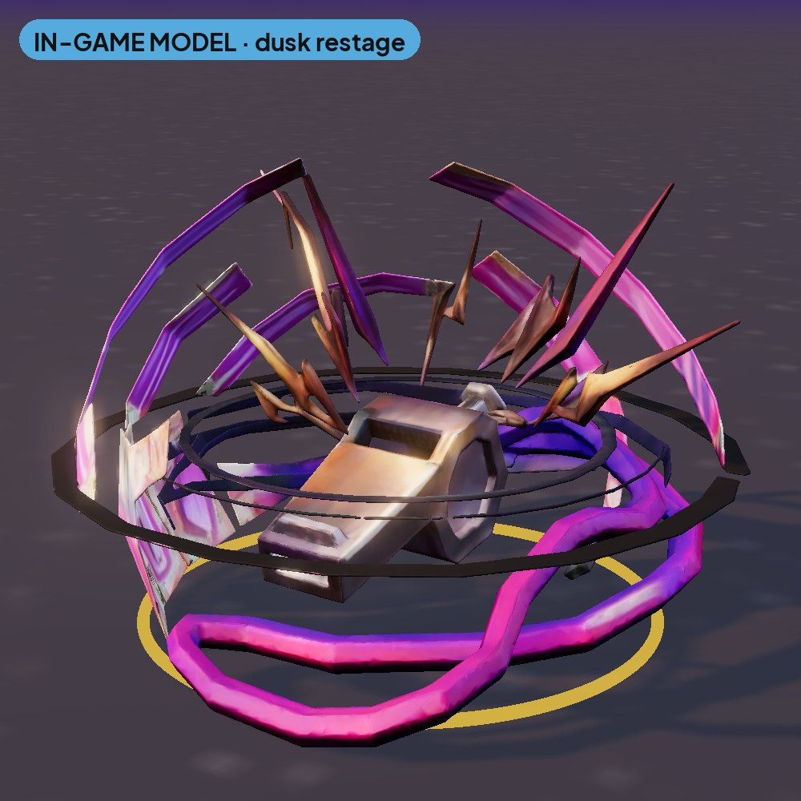
HUD icons for every power-up: Icons.